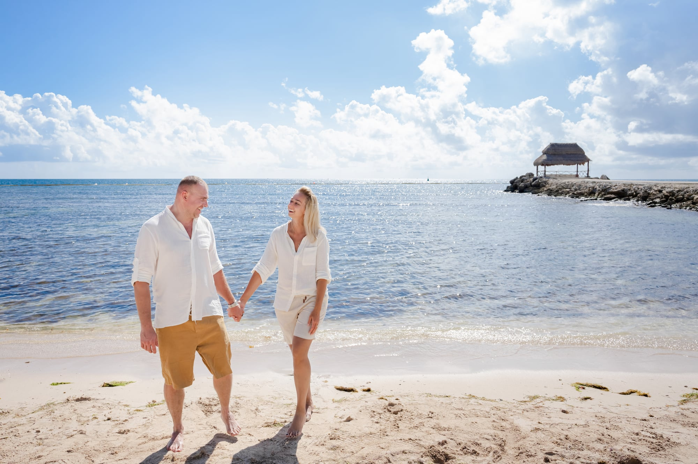

Luxury Photographer in Cancún, Mexico
Luxury golden hour photography for international guests at Cancun's finest resorts. Magazine-quality portraits, delivered in 1-3 days.
Book Your Session
Luxury golden hour photography for international guests at Cancun's finest resorts. Magazine-quality portraits, delivered in 1-3 days.
Book Your Session
We are an independent, editorial-focused studio working exclusively with international visitors at luxury properties. Every session begins with a planning conversation before you arrive — we learn your aesthetic, review your resort's best locations, and build a creative vision tailored to you.
Our team brings deep knowledge of golden hour timing across every season, familiarity with each property's hidden gems, and editorial pose direction refined through hundreds of luxury sessions.
We study the light, understand the architecture, and direct with intention so every frame feels considered.

Relaxed, joyful sessions for families of all sizes. We specialize in directing young children naturally, capturing genuine laughter and connection. Multi-generational reunions are a particular strength.

Romantic editorial sessions for honeymoons, anniversaries, and romantic getaways. We guide every pose so you both look and feel natural. The Caribbean light does the rest.

From intimate elopements on Playa Delfines to grand celebrations at luxury ballrooms. Fine-art editorial perspective with full coverage from getting ready through the reception.

Surprise proposals captured with discretion and precision. We coordinate timing, positioning, and location so we photograph the authentic reaction perfectly.


Send us a message via Instagram DM with your travel dates, resort name, and the type of session you envision. We typically respond within a few hours.
We discuss locations at your resort, wardrobe coordination, the best time slot, and creative direction. You receive a detailed styling guide.
Our team arrives at golden hour fully prepared. We direct every pose, adjust for shifting light, and move between 2-3 locations. Sessions last 60-90 minutes.
Within 1-3 business days, receive your individually edited, color-graded gallery in our signature editorial style. Download, share, and order prints.
We booked IVAE for our family reunion at Hyatt Ziva and the results exceeded every expectation. The team knew exactly where to position us on the beach for the best light, kept our kids laughing the entire time, and delivered our gallery in two days. These photos are the centerpiece of our living room now.
I hired IVAE to secretly photograph my proposal at Playa Delfines. The coordination was flawless — they were positioned perfectly and my fiancee had no idea. The photos captured her genuine reaction and the golden hour light was breathtaking. Worth every penny.
As someone who feels awkward in front of a camera, I was nervous about our honeymoon session. The IVAE team made us feel completely at ease with their direction. Every pose felt natural and the final images look like they belong in a magazine. We have already booked them for our anniversary trip next year.
Golden hour produces the most flattering light for portraits. In Cancun, golden hour occurs approximately 5:30-6:30 PM from November through February and 6:30-7:30 PM from March through October. We also offer sunrise sessions starting around 6:00-6:45 AM for guests who prefer empty beaches and soft morning light. We never schedule midday sessions — the overhead tropical sun creates harsh shadows that compromise portrait quality.
We recommend booking 2-4 weeks before your arrival in Cancun. Peak season (December through April) and holidays fill quickly, so booking 4-6 weeks ahead during those periods ensures availability. Last-minute bookings within 48 hours are sometimes possible depending on our schedule — reach out via Instagram DM and we will do our best to accommodate you.
Yes. Our team photographs regularly at properties throughout the Cancun Hotel Zone including JW Marriott, Hyatt Ziva, Hyatt Zilara, SLS Playa Mujeres, Kempinski Hotel Cancun, Secrets The Vine, Le Blanc Spa Resort, Nizuc Resort and Spa, and many others. We know each property's best locations, lighting conditions at different times, and access policies for photography.
Cancun's rain showers are typically brief, lasting 15-30 minutes. If rain is forecast, we monitor conditions closely and may shift your session start time by 30-60 minutes. In the rare event of extended rain, we reschedule at no extra cost to the next available golden hour slot during your stay. We always have backup plans including covered resort areas and lobby locations that photograph beautifully.
Most sessions last 60-90 minutes, which gives us time to capture multiple setups across 2-3 locations within your resort or the nearby beach. For weddings and proposals, sessions range from 2-6 hours depending on the scope. We never rush — the session ends when we have captured everything we envisioned together during planning.
You will receive your fully edited gallery within 1-3 business days after your session. Every image is individually retouched with our signature editorial style — color grading, skin refinement, and compositional adjustments. We deliver through a private online gallery where you can download, share, and order prints.
We provide a detailed styling guide after booking. Generally, we recommend light, flowy fabrics in neutral or complementary tones — whites, creams, soft blues, sage greens, and earth tones photograph beautifully against Cancun's turquoise waters and white sand. Avoid busy patterns, neon colors, and logos. For families, coordinating (not matching) outfits create the most polished result. Your planning conversation includes personalized wardrobe suggestions.
Absolutely — surprise proposals are one of our specialties. We coordinate discreetly with you in advance to plan the perfect location, timing, and our positioning so we capture the authentic reaction without being noticed. Popular proposal spots include Playa Delfines at sunset, private resort cabanas, cenote settings near Cancun, and beachfront dinner setups.
Yes. Several stunning cenotes are within 30-90 minutes of the Cancun Hotel Zone, and they create extraordinary backdrops for couples, engagement, and bridal sessions. We can recommend cenotes that suit your aesthetic and comfort level. Cenote sessions are typically scheduled separately from beach sessions to allow adequate travel time and to take advantage of the unique natural light conditions underground.